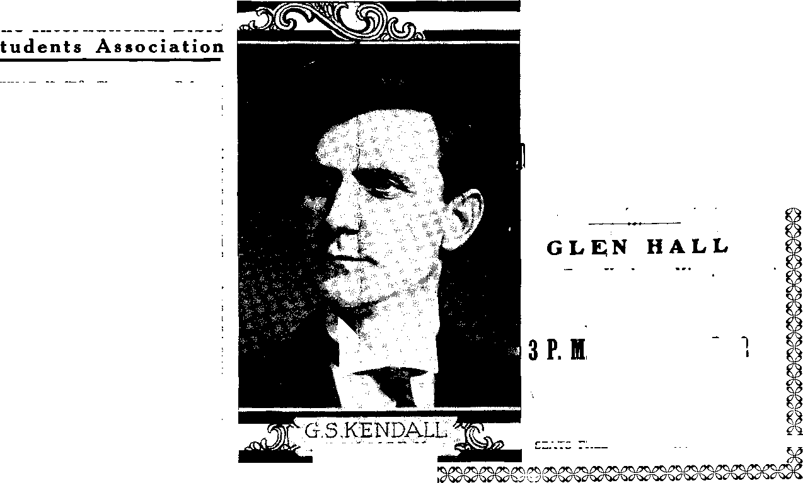

VOL. IV.
No. 4.
NEW YORK CITY.
Religious and Scientific Gleanings
The following articles are selected from Pastor Russell’s famous volume, "THE DIVINE PLAN OF THE AGES,” now printed in fourteen languages, with a circulation of almost four million copies. The volume, of 384 pages, neatly bound in English Maroon Cloth, gold embossed, will be sent postpaid to any address on receipt of 35 cents. The book is sold at cost price to enable even the poorest to have its aid in Bible Study. Orders may be sent, if desired, in our care.—Editor.
HOPE FOR TITANIC DEAD.
From Pastor Russell's Sermon of April 28.
While we weep with the survivors of the Titanic disaster, let us thank God that a better understanding of the Bible enables us to sorrow not hopelessly. -Not long ago, misguided by our creeds of the Dark Ages, we would have asked1, Were any of the 1,600 who perished saints? And assured that very few of them would have claimed to be saints, we would have concluded that all the remainder plunged down to a Catholic Purgatory. of terror, or wirse, to a Protestant hell of eternal torture.
Even the tales of their great gallantry and heroism would not have altered the decision, which would have hung on the question Did they confess Jesus in word and deed? we would have asked. Were they church members? This is the same argument used respecting the 90,000 heathen who die every day in the year, "going down into Christless graves,” she “London Missionary Society” truly says, but means, and is understood to mean, into Christless eternal torture!
Now, how different! Now we see that a faithful, elect Church is being selected during this Age; that in the next Age they with Jesus may assist, bless, uplift all the non-elect to an earthly salvation to human perfection, in the new Paradise—earth—which Messiah’s Kingdom will usher in. Thus, only the wilfully wicked will ever be annihilated, while all those who then shall prove themselves to be willing and obedient shall have the Divine favor and everlasting life. God’s Power is Infinite, se is His Love, His mercy, His goodness!
PHILIPPINE ISLANDS.
Under American vs. Spanish Rule.
From a letter recently received we quote the following interesting extract: ’’Nowhere were we more surprised than in the Philippines. At Manila, a city of 300,000, we saw many evidences of progress. Our hearts burned with patriotic flame as we saw the work in progress, and perceived that the Government of the United States has been dealing so wisely and generously with the Filipinos—as an elder brother with a younger.
“For centuries these islands were under the control of Spain. With the money brought to them by the poor people, the representatives of the Catholic Church had not only lived in luxury, but had amassed millions of wealth. We were told that they now hold title to 95 per cent, of the buildings in the walled city of Manila. One of these buildings they rent to the United States for $400 a month.
“Gradually the people are becoming awakened and enlightened. They are showing a great hunger for education. The schools are crowded. Four hundred new school buildings are projected. The 800 American school teachers whom the Government brought here are now supplanted by 6,000 native school teachers. The work of civilization is progressing in an unprecedented manner. How happy this contrast with the condition of the colonies of other nations, which seem to be run on the exploit system—for the enrichment of the possessing governments and private individuals whom they favor.
"Our American school teachers here, as at home, are not permitted to give any religious instructions. In other words, the work of the Government is merely a civilizing one, but the work accomplished in this respect seems not very different from that being accomplished by the various missionary enterprises of the Orient—for they all confess that to put religion prominently before the pupils would be to destroy influence and empty the schools.
“On the whole, it seems to us that our Government is doing the most successful missionary work to be found anywhere. We were much surprised and pleased at the personnel of the officers and soldiers stationed at Manila, whom we met. We would have been glad to have found them saintly Christians, but, on the oth$f_ hand, we rejoiced that we did find them broad-minded gentlemen, sympathetic with the civilizing work with which they are associated. To our surprise, we found that all this vast enterprise is being conducted along business lines—that the Filipinos themselves are bearing the expense—all expenses except those of the Army and Navy.
“It was proposed recently to erect a Y. M. C. A. building for the Filipinos, and a subscription paper was started. The Catholic Archbishop heard of it, and denounced it freely in the newspapers a.nd by circular letters sent about. But instead of this stopping the subscriptions, it had the reverse effect. The proposed 180,000 was oversubscribed—$100,OGO was raised. The Archbishop now threatens that he will build a competitive institution, and the answer of the people (Catholics) is that they hope he will de <o.”
THE EXISTENCE OF A SUPREME INTELLIGENT CREATOR ESTABLISHED
EVIDENCES ASIDE FROM THE BIBLE, EXAMINED IN THE LIGHT OF REASON.—AN UNTENABLE THEORY.— A REASONABLE THEORY.—THE CHARACTER OF GOD DEMONSTRATED.—REASONABLE DEDUCTIONS.
r VEN from the standpoint of the skep-“ tic, a reasonable and candid search into the unknown, by the light of what is known, will guide the unbiased, intelligent reasoner in the direction of the Truth. Yet it is evident that without a direct revelation of the Plans and purposes of God, men could only approximate the Truth, and arrive at indefinite conclusions. But let us for the moment lay aside the Bible and look at things from the standpoint of reason alone.
He who can look into the sky with a telescope, or even with his natural eye alone, and see there the immensity of creation, its symmetry, beauty, order, harmony and diversity, and yet doubt that the Creator of these is vastly his superior both in wisdom and power, or who can suppose for a moment that such order came by chance, without a Creator, has so far lost or ignored the faculty of‘reason as to be properly considered what the Bible terms him, a fool (one who ignores or lacks reason): “The fool hath said in his heart, There is no Cod.” However it happened, at least that much of the Bible is true, as every reasonable mind must conclude; for it is a self-evident truth that effects must be produced by competent causes. Every plant and every flower, even, speaks volumes of testimony on this subject. Intricate in construction, exquisitely beautiful in form and texture, each speaks of a wisdom and skill above the human. How short-sighted the absurdity which boasts of human skill and ingenuity, and attributes to mere chance the regularity, uniformity and harmony of nature; which acknowledges the laws of nature, while denying that nature has an intelligent Lawgiver.
The Evolution Theory Lacks Proof.
Some who deny the existence of an intelligent Creator claim that nature is the only God, and that from nature all forms of animal and vegetable development proceeded without the ordering of intelligence, but governed, they say, by “the law of the survival of the fittest” in a process of evolution.
This theory lacks proof, for all about us we see that the various creatures are of fixed natures, which do not evolve to higher natures; and though those who hold to this theory have made repeated endeavors, they have never succeeded either in bleffding different species or in producing a new, fixed variety. No instance is known where one kind has changed to another kind.1 Though there are fish that can use their fins for a moment as wings, and fly out of the water, and frogs that can sihg, they have never been known to change into birds; and though there are among brutes some which bear a slight resemblance to men, the evidence is wholly lacking that man was evolved from such creatures. On the contrary, investigations prove that though different varieties of the same species may be produced, it is impossible to blend the various species, or for one to evolve from another. For the same reason the donkey and the horse, though resembling each other, cannot be claimed as related, for it is well known that their offspring is imperfect and cannot propagate their species.
Surely if unintelligent nature were the creator or evolver She would continue the process, and there would be no such thing as fixed species, since without- intelligence nothing would arrive at fixed conditions. Evolution would be a fact today, and we would see about us fish becoming birds, and monkeys becoming men. This theory we conclude to be as contrary to human reason as to the Bible, when it claims that intelligent beings were created by a power lacking intelligence.
Behind Nature Is the Omnipotent God.
One theory regarding the creation (excepting man) by a process of evolution, to which we see no serious objection, we briefly state as follows: It assumes that the various species of the present are fixed and unchangeable so far as nature or kind is concerned, and though present natures may be developed to a much higher standard, even to perfection, these species or natures will forever be the same.
This theory further assumes that none of these fixed species were originally created so, but that in the remote past they were developed from the earth, and by gradual processes of evolution from one form to another. These evolutions, under Divinely established laws, in which changes of food and climate played an important part, may have continued until the fixed species, as at present seen, were established, beyond which change is impossible, the ultimate purpose of the Creator in this respect, to all appearance, having been reached.
Though each of the various, families of plants and animals is capable of improvement or of degradation, none of them is susceptible of change into, nor can they be produced from, other families or kinds. Though each of these may attain to the perfection of its own fixed nature, the Creator’s design as to nature having been attained, further change in this respect is impossible.
It is claimed that the original plants and animals, from which present fixed varieties came, became extinct before the creation of man. Skeletons and fossils of animals and plants which do not now exist, found deep below the earth’s surface, favor this theory. This view neither ignores nor rejects the Bible teaching that man was a direct and perfect creation, made in the mental and moral image of his Maker, and not a development by a process of evolution, probably common to the remainder of creation. This view would in no sense invalidate, but would support, the Bible’s claim, that nature as it is to-day teaches that an Intelligent Being ordered it, and was its first cause. Let human reason do her best to trace known facts to reasonable and competent causes, giving due credit to nature’s laws in every case; but back of all the intricate machinery of nature is the hand of its great Author, the intelligent, omnipotent God.
We claim, then, that the existence of an Intelligent Creator is a clearly demonstrated truth, the proof of which lies all around us; yea, and within us, for we are His workmanship, whose every power of mind and body speaks of a marvelous skill beyond our comprehension. And He is also the Designer and Creator of what we term nature. We claim that He ordered and established the laws of nature, the beauty and harmony of whose operation we see and admire. This One whose wisdom planned and whose power upholds and
U THE RICH > AJi AM» LAZABV8 £ ■yj All Christians have wondered re- &■ xj specting this parable. When taken f. x| literally it seems unreasonable. Why g-xj should a man suffer torture merely L because he was rich, well clothed, xj and bountifully fed? And why should L m another man be carried to glory xi simply because he was sick and poor U a| and a companion of dogs? In the xi clear light now shirking, this parable ?Fis luminous and beautiful to such J?
an extent that one is compelled to jx *4 laugh at his own foolish misunder- pt standing of it in the past. ix
The full explanation of this par- pf X avle is given in another number of hr *1 this paper, which we shall be glad ff to send you, free of charge, upon Gr postal-card request. Address, Bible Jx & Tract Society, 17 Hicks St , Brook-
* lyn, N. Y. N guides the Universe, whose wisdom and» power so immeasurably transcend our own, we instinctively worship and adore.
To realize the existence of this Mighty God is but to dread His Omnipotent: strength, unless we can see Him possessed of benevolence and goodness corresponding to His power. Of this fact' we are. also fully assured by the same evidence which proves His existence, power and wisdom. Not only are we-forced to the conclusion that there is a God, and that His power and wisdom are immeasurably beyond our own, but we are forced by reason to the conclusion that the grandest thing created la not superior to its Creator; hence we must conclude that the greatest manifestation of benevolence and justice among men is inferior in scope to that of the Creator, even as man’s wisdom and power are inferior to His. And thus we have before our mental vision the character and attributes of the great Creator. He is wise, just, loving and powerful; and the scope of His attributes is, of necessity, immeasurably wider than that of His grandest creation.
Divine Power Has Produced Counties1 Worlds About Us.’
But further: having reached this reasonable conclusion relative to the existence and character of our Creator, let us-inquire, What should we expect of such1 a Being? The answer comes, that the-possession of such attributes reasonably argues their exercise, their use. God's-power must be used, and that in harmony with His own nature—wisely, justly and benevolently. Whatever maybe the means to that end, whatever may be the operation of God’s power, the-final outcome must be consistent with< His nature and character, and every step must be approved of His infinite-wisdom.
What cojild be more reasonable than such exercise of power as we see manifested in the creation of countless worlds1 about us, and in the wonderful variety of earth? What could be more reasonable than the creation of man, endowed: with reason and judgment, capable of1 appreciating his Creator’s works, and1 judging of His skill—of His wisdom, Justice, Power and Love? All this is reasonable, and all in perfect accord with1 facts known to us.
And now comes our final proposition:: Is it not reasonable to suppose that suchi an infinitely wise and good Being, having1 made' a creature capable of appreciating" Himself and His Plan, would be moved by His Love and Justice to supply the wants Of that creature’s nature, by giving him some revelation? Would it not be a reasonable supposition, that God would supply to man information concerning the object of his existence, and His plans for his future. On the contrary, we ask, would it not be unreasonable to suppose that such a Creator would make such a creature as man, endow him with power of reason reaching out into the future, and yet make no revelation of His plans to meet those longings? Such a course would be unreasonable, because contrary to the character which we reasonably attribute to God; contrary to the proper course of a being controlled by Justice and Love.
Having Given Man Capacity for Appreciation, God Provides Him a Revelation.
We may reason that in creating man, had Divine Wisdom decided it inexpedient to grant him a knowledge of his future destiny, and his share in his Creator’s plans, then surely Divine Justice, as well as Divine Love, would have insisted that the being should be so limited in tus capacity that he would not continually be tormented and perplexed with doubts, and fears, a-nd ignorance; and as a consequence Divine Power would have been used Mnder those limitations. The fact, then, that map
PUBLISHED AT
Ko. 89 BBEKMAN ST.. NEW YORK CITY C. W. Hek, Publisher.
An Independent, Unsectarian Religious Newspaper, Specially Devoted to the Forwarding of tne Laymen's Home Missionary Movement for the Glory of God and Good of Humanity.
has capacity for appreciating a revelation of the Divine Plan, taken in connection with the conceded character of his Creator, is an abundant reason for expecting that God would grant such a revelation, in such time and manner as HisWisdom approved.
So, then, in view of these considerations, even if we were ignorant of the Bible, reason would lea.d us to expect and to be on the lookout for some suoh revelation as the Bible claims to be. And furthermore, noting the order and harmony of the general creation, as in grand procession the spheres and systems keep time and place, we cannot but conclude that the minor irregularities, such as earthquakes, cyclones, etc., are but indications that the working together of the various elements in this world Is not at present perfect. An assurance
BIBLE AS A DIVINE REVELATION
VIEWED IN THE LIGHT OF REASON.
THE Bible is the torch of civilization * and liberty. Its influence for good in society has been recognized by the greatest statesmen, even though they for the most part have looked at it through the various glasses of conflicting creeds, which, while upholding the Bible, grievously misrepresent its teachings. The grand old Book is unintentionally but wofully misrepresented by its friends, many of whom would lay down life on its behalf; and yet they do it more vital injury than its foes, by claiming its support to their long-revered misconceptions of its Truth, received through the' traditions of their fathers. Would that such would awake, re-examine their oracle, and put to confusion its enemies by disarming them of their weapons!
Since the light of nature leads us to expect a fuller revelation of God than that which nature supplies, the' reasonable, thinking mind will be prepared to examine the claims of anything purporting to be a Divine revelation, which bears a reasonable surface evidence of the truthfulness of such claims. The Bible claims to be such a revelation from God, and it does come to us with sufficient surface evidence as to the probable correctness of its claims, and gives us a reasonable hope that closer investigation will disclose more complete and positive evidence that it is indeed the Word of God.
The Bible Has Outlived the Storms of Thirty Centuries.
The Bible is the oldest book in existence; it has outlived the storms of thirty centuries. Men have endeavored by every means possible to banish it from the face of the earth; they have hidden it, buried it, made it a crime punishable "With death to have it in possession, and the most bitter and relentless persecutions have been waged against those who had faith in it; but still the Book lives. To-day, while many of its foes (Slumber in death, and hundreds of volumes written to discredit it and to overthrow its influences are long since ■forgotten, the Bible has found its way into every nation and language of earth, over two hundred different translations of it having been made. The fact that this Book has survived so many centuries, notwithstanding such unparalleled efforts to banish and destroy it, is at least strong circumstantial evidence that the great Being whom, it claims as its Author has also been its Preserver.
It is also true that the moral influence of the Bible is uniformly good. Those who become careful students of its pages are invariably elevated to a purer life. Other writings upon religion and the various sciences have done good and have ennobled and blessed mankind, to some extent; but all other books combined have failed to bring the joy, peace and blessing to the groaning creation that the Bible*has brought to both the rich and the poor, to the learned and the unlearned. The Bible is not a book to be read merely; it is a book to be studied with care and thought; for God’s thoughts are higher than our thoughts, and His ways than our ways. And if we would comprehend the Plan and thoughts of the infinite God, we must bend all our energies to that important work. The richest treasures of truth do not always lie on the surface.
This Book throughout * constantly points and refers to one prominent character, Jesus of Nazareth, who, it claims, was the Son of God. From the beginning to end His name, and office, and work are made prominent. That a man called that all will ultimately be perfect and harmonious on earth as in the heavens, with some explanation why it is not so at present, are requests which are not unreasonable for reasoning men to ask, nor for the Creator, whose Wisdom, Power and Benevolence are demonstrated, to answer. Hence we should expect the revelation sought to include such an assurance and such an explanation.
God’s Character Perfect In Justice, Wisdom, Love and Power.
Having established the reasonableness Of expecting a revelation of God’s will and Plan concerning our race, we will examine in the next chapter the general character of the Bible, which claims to be just such a revelation. And if it presents the character of God in perfect harmony with what reason, as above considered, dictates, we should conclude that it thus proves itself to be the needed and reasonably expected revelation from God, and should then accept its testimony as such. If of God, its teachings, when fully appreciated, will accord with His character, which reason assures us is perfect in Wisdom, Justice, Love and Power.
’’Ye curious minds, who roam abroad, And trace creation’s wonders o’er;
Confess the footsteps Of your God, And bow before Him, and adore.
“The heavens declare Thy glory, Lord; In every star Thy wisdom shines;
But when our eyes behold Thy Word, We read Thy name in fairer lines.’’
Jesus of Nazareth lived, and was somewhat noted, about the time indicated by the writers of the Bible, is a fact of history outside the Bible, and it is variously and fully corroborated. That this Jesus was crucified because He had rendered Himself offensive to the Jews and their priesthood is a further fact established by history outside the evidence furnished by the New Testament writers. The writers of the New Testament (except Paul and Luke) were the personal acquaintances and disciples of Jesus of Nazareth, whose doctrines their writings set forth.
The Existence of a Book Implies Motive on the Part of the Writer.
The existence of any book implies motive on the part of the writer. We therefore inquire, What motives could have inspired these men to espouse the cause of this person? He was coif1-demned to death and crucified as a malefactor by the Jews, the most religious among them assenting to and demanding His death, as one unfit to live. And in espousing His cause, and promulgating His doctrines, these men braved contempt, deprivation and bitter persecution, risked life itself, and in some cases even suffered martyrdom.
Admitting that while He lived Jesus was a remarkable person, in both His life and His teaching, what motive could there have been for any to espouse His cause after He was dead?—especially when His death was so ignominious? And if we suppose that these writers invented their narratives, and that Jesus was their imaginary or ideal hero, how absurd it would be to suppose that sane men, after claiming that He was the Son of God, that He had been begotten in a supernatural way, had supernatural powers by which He had healed lepers, restored sight to those born blind, caused the deaf to hear, and even awakened the dead—how very absurd to suppose that they would wind up the story of such a character by stating that a little band of His enemies executed Him as a felon, while all His friends and disciples, and among them the writers themselves, forsook Him and fled in the trying moment!
The fact that profane history does not agree in some respects with these writers should not lead us to regard their records as untrue. Those who do thus conclude should assign and prove some motive on the part of these writers for making false statements. What motives could have prompted them? Could they reasonably have hoped thereby for fortune, or fame, or power, or any earthly advantage? The poverty of Jesus’ friends, and the unpopularity of their hero Himself with the great religionists of Judea, contradict such a thought; while*the facts that He died as a malefactor, a disturber of the peace,
V Send postal-card request to Bible
& Tract Society, 17 Hicks St., Brook-lyn, N. Y., for free copies of
aok- k this pt
sub-are: ft
paper. Some of the interesting jects you may have for asking Calamities—Why Permitted? Creed Idols Smashed!
Spiritism is Demonism!
Prince Lucifer of Old Now Prince a of Demons.
Do You Believe in the Resurrec- P tion?
Which Is the True Gospel? and that He was made of no reputation, held forth no hope of enviable fame or earthly advantage to those who should attempt.to re-establish His doctrine.
On the contrary, if such had been the object of those who preached Jesus, would they not speedily have given it up when they found that it brought disgrace, persecution, imprisonment, stripes and even death ? Reason plainly teaches that men - who sacrificed home, reputation, honor and life; who lived not for present gratification; but whose central aim was to elevate their fellow-men, arid who inculcated morals of the highest type, were not only possessed of a motive, but further that their motive must have been pure and their object grandly sublime. Reason further declares that the testimony of such men, actuated only by pure and good motives, is worthy of ten times the weight and consideration of ordinary writers. Nor were these men fanatics; they were men of sound and reasonable mind, and furnished in every case a reason for their faith and hope; and they were perseveringly faithful to those reasonable convictions.
What Astonishes Those Who Presume the Bible to Be a Manufactured History.
And what we have here noticed is likewise applicable to the various writer's of the Old Testament. They were, in the main, men notable for their fidelity to the Lord; and this history as impartially records and reproves their weaknesses and shortcomings as it commends their virtues and faithfulness. This must astonish those who presume the Bible to be a manufactured history, designed to awe men into reverence of a religious system. There is a straightforwardness about the Bible that stamps it as Truth. Knaves, desirous of representing a man as great, and especially if desirous of presenting some of his writings as inspired of God, would undoubtedly paint such a one’s character blameless and noble to the last degree. The fact that such a course has not' been pursued in the Bible is reasonable evidence that it was not fraudulently gotten up to deceive.
Having, then, reason to expect a revelation of God’s will and Plan, and having found that the Bible, which claims to be that revelation, was written by men whose motives we see no reason to impugn, but which, on the contrary, we see reason to approve, let us examine the character of the writings claimed as inspired, to see whether their teachings correspond with the character we have reasonably imputed to God, and whether they bear internal evidence of their truthfulness.
The first five books of the New Testament and several of the Old Testament are narratives or histories of facts known to the writers and vouched for by their characters. It is manifest to all that it did not require a special revelation simply to tell the truth with reference to matters with which they were intimately and fully acquainted. Yet, since God desired to make a revelation to men, the fact that these histories of passing events have a bearing on that revelation would be a sufficient ground to make the inference a reasonable one, that God would supervise, and so arrange, that the honest writer whom He selected for the work should be brought in contact with the needful facts. The credibility of these historic portions of the Bible rests almost entirely upon the characters and motives of their writers. Good men will not utter falsehoods. A pure fountain will not give forth, bitter waters. And the united testimony of these writings silences any suspicion that their authors would say or do evil, that good might follow.
Reason for Recording Certain Facts of History Considered Indelicate.
It in no way invalidates the truthfulness of certain books of the Bible, such as Kings, Chronicles, Judges, etc., when we say that they are simply truthful and carefully kept histories of prominent events and persons of their times. When it is remembered that the Hebrew Scriptures contain history, as well as the Law and the prophecies, and that their histories, genealogies, etc., were the more explicit in detailing circumstances because of the expectancy that the promised Messiah would come in a particular line from Abraham, we see a reason for the recording of certain facts of history considered indelicate in the light of this twentieth century.
For instance, a clear record of the origin of the nations of the Moabites and of the Ammonites, and of their relationship to Abraham and the Israelites, was probably the necessity in the historian’s mind for a full history of their nativity. (Gen. 19:36-38.) Likewise, a very detailed account of Judah’s children is given, of whom came David, the king, through whom the genealogy of Mary, Jesus’ mother, as well as that of Joseph, her husband (Luke 3:23, 31, 33, 34; Matt. 1:2-16), is traced back to Abraham. Doubtless the necessity of thoroughly establishing the pedigree was the more important, since of this tribe (Gen. 49:10) was to come the ruling King of Israel, as well as the promised Messiah, and hence the minutiae of detail not given in other instances.—Gen. 38.
There may be similar or different reasons for other historic facts recorded in the Bible, of which by and by we may see the utility, which, were it not ft history, but simply a treatise on morals, might without detriment be omitted: though no one can reasonably say that the Bible anywhere countenances impurity. It is well, furthermore, to remember that the same facts may be more or less delicately stated in any language; and that while the translators of the Bible were, rightly, too conscientious .to omit any of the record; yet they lived in a day less particular in the choice of refined expressions than ours; and the same may be surmised of the early Bible times and habits of expression. Certainly the most fastidious can find no objection on this score to any expression of the New Testament.
The Books of Moses and the Laws Therein Promulgated.
The first five books of the Bible arfe
known as the Five Books of Moses, though they nowhere mention his name as their author. That they were written by Moses, or under his supervision, is a reasonable inference; the account of his death and burial being properly added by his secretary. The omission of the positive statement that these books were written by Moses is no proof against the thought; for had another written them to deceive and commit a fraud, he would surely have claimed that they were written by the great leader and statesman of Israel, in order to make good his imposition.—See Deut. 31:9-27.
Of one thing we are certain, Moses did lead out Of Egypt the Hebrew nation. He did organize them as a nation under the laws set forth in these books; and the Hebrew nation, by common consent, for over three thousand years, has claimed these books as a gift to them from Moses, and has held them so sacred that a jot or tittle must not be altered—thus giving assurance of the purity of the text.
These writings of Moses contain the only credible history extant of the epoch which it traverses. Chinese history affects to begin at creation, telling how God went out on the water in a skiff, and, taking in His hand a lump of earth, cast it into the water. That lump of earth, it claims, became this world, etc. But the entire story is so devoid of reason that the merest child of intelligence would not be deceived by it. On the contrary, the account given in Genesis starts with the reasonable assumption that a God, a Creator, an intelligent First Cause, already existed. It treats not of God’s having a beginning, but of His work and of its beginning and its systematic, ' orderly progress—“In the beginning God created the heavens and the earth.” &
Then, stepping over the origin of the earth without detail or explanation, the narrative of the six days [epochs] of preparing it for man proceeds. That account is substantially corroborated by the accumulating light of science for four thousand years; hence it is far more reasonable to accept the claim that its author, Moses, was Divinely inspired, than to assume that the intelligence of one man was superior to the combined intelligence and research of the rest of the race in three thousand years since, aided by modern implements and millions of money.
Look next at the system of laws laid down in these writings. They certainly were without an equal, either in their day' or since, until this twentieth century; and the laws of this century are based upon the principles laid down in the Mosaic Law, and framed in the main by men who acknowledge the Mosaic Law as of Divine origin.
The Ten Commandments a Brief Synopsis of the Whole Law.
The Decalogue is a brief synopsis of the whole Law. Those Ten Commandments enjoin a code of worship and morals that must strike every student as remarkable; and if never before known, and now found among the ruins and relics of Greece, or Rome, or Babylon (nations which have risen and fallen again, long since those laws were given), they would be regarded as marvelous if not supernatural. But familiarity with them and their claims has begotten measurable indifference, so that their real greatness is unnoticed except by the few. True, those commandments do not teach of Christ; but they were given, not to Christians, but to Hebrews; not to teach faith in a Ransom, but to convince men of their sinful state; and need of a Ransom. And the substance of those commandments was grandly epitomized by the illustrious founder of Christianity, is the words, “Thou shalt love the Lord thy God with
THE THIEF ON THE CROSS.
V What did Jesus mean by His J words, “Verily I say unto thee to-V> day, thou shalt be with Me in Para-J dise”—if Paradise, lost 6,000 years V ago, will not be. restored until the J Second Coming of Jesus and the es-V tablishment of His Kingdom?
J The full answer to this question V we will be pleased to send you upon 3 receipt of postal-card request. Ad-■W dress, Bible & Tract Society, 17 J Hicks St., Brooklyn, N. Y.
an thy heart, and with all thy soul, and with all thy mind, and with all thy strength;” and “Thou shalt love thy neighbor as thyself.”—Mark 12:30, 31.
The government instituted by Moses differed from all others, ancient and modern, in that it claimed to be that of the Creator Himself, and the people were held accountable to Him; their laws and
Institutions, civil and religious, claimed to emanate from God, and, as we shall presently see, were in perfect harmony with what reason teaches us to be God’s' character. The Tabernacle, in the centre of the camp, had in its “Most Holy” apartment a manifestation of Jehovah’s presence as their King, whence by supernatural means they received instruction for the proper administration of their affairs as a nation. An order of priests was established, which had complete charge of the Tabernacle, and through them alone access and communion with Jehovah was permitted.
The first thought of some in this connection would perhaps be, "Ah! there we have the object of their organization; with them, as with other nations, the priests ruled the people, imposing upon their credulity and exciting their fears for their own honor and profit.” But hold, friend; let us not too hastily assume anything. Where there is such good opportunity for testing this matter by the facts, it would not be reasonable to jump to conclusions without the facts. The unanswerable evidences are contrary to such suppositions. The rights and the privileges of the priests were limited; they were given no civil power whatever, and wholly lacked opportunity for using their office to impose upon the rights or consciences of the people; and this arrangement was made by Moses, a member of the priestly line.
Israel's Government Different from Any Before or Since.
As God’s representative in bringing Israel out of Egyptian bondage, the force of circumstances had centralized the government in his hand, and made the meek Moses an autocrat in power and authority, though from the meekness of his disposition he was in fact the overworked servant of the people, whose very life was being exhausted by the onerous cares of his position. At this juncture a civil government was established, which was virtually a democracy. Let us not be misunderstood; regarded as unbelievers would esteem it, Israel’s government was a democracy, but regarded in the light of its own claims, it was a Theocracy, i.e., a Divine Government; for the laws given by God, through Moses, per-mltted of no amendments; they must neither add tO’nor take from their-code Of laws. Thus seen, Israel’s government was different from any other civil government, either before or since.
"The Lord said unto Moses, Gather unto Me seventy men of the elders of Israel, whom thou knowest to be elders of the people and officers over them; and bring them unto the Tabernacle of the congregation, that they may stand there with thee. And I will come down and talk with thee there, and I will take of the spirit which is upon thee and will put it upon them, and they shall bear the burden of the people with thee, that thou bear it not alone.” (Num. 11:16, 17. See also verses 24 to 30 for an example of true and guileless statesmanship and meekness.) Moses, rehearsing this matter, says, “So I took the chief of your tribes, wise men, and known [of influence], and made them heads over you; captains over thousands, and captains ever hundreds, and captains over fifties, and captains over tens, and officers among your tribes.”—Deut. 1:15; Exod. 18:13-26.
History of Other Nations Shows No fr Equal to Israel's.
' Thus it appears that this distinguished lawgiver, so far from seeking to perpetuate or increase his own power by placing the government of the people under the control of his direct relatives, of the priestly tribe, to use their religious authority to fetter the rights and liberties of the people, on the contrary, introduced to the people a form of government calculated to cultivate the spirit of liberty. The histories of other nations and rulers show no parallel to this. In every case the ruler has sought his own aggrandizement and greater power. Even in instances where such have aided in establishing republics, it has appeared from subsequent events that they did it through policy, to obtain favor with the people, and to perpetuate their own power.
Circumstanced as Moses was, any ambitious man, governed by policy and attempting to perpetuate a fraud upon' the people, would have worked for greater centralization of power in himself and his family; especially as this would have seemed an easy task from the religious authority being already in that tribe, and from the claim of this nation to be governed by God, from the Tabernacle. Nor Is it supposable that a man capable of forming such laws, and of ruling such a people, would be so dull of comprehension as not to see what the tendency of his course would be. So completely was the government of the people put into their own hands, • that though it was stipulated that the weightier cases which those governors eeuld not decide were to be brought unto Moses, yet they themselves were the judges as to what cases went before Moses—“The cause which is too hard for you, bring it unto me, and I will hear it.”—Deut. 1:17.
Thus seen, Israel was a republic whose officers acted under a Divine commission. And to the confusion of those who ignorantly claim that the Bible sanctions an established empire rule over the people, instead of “a government of the people by the people,” be it noted that this republican form of civil government continued for over four hundred years. And it was then changed for that of a kingdom at the request of “The Elders,” without the Lord’s approval, who said to Samuel, then acting as a sort of informal president, “Hearken unto the voice of the people in all that they shall say unto thee, for they have not rejected thee, but they have rejected Me, that I should not reign over them.”
At God’s instance Samuel explained to the people how their rights and liberties would be disregarded, and how they would become servants by such a change; yet they had become infatuated with the popular idea, illustrated all around them in other nations. (1 Sam. 8:6-22.) In considering this account of their desire for a king, who is not impressed with the thought that Moses could have firmly established himself at the head of a great empire without difficulty?
While Israel as a whole constituted one nation, yet the tribal division was ever recognized after Jacob’s death. Each family, or tribe, by common consent, elected or recognized certain members as its representatives, or chiefs. This custom was continued even through their loijg slavery in Egypt. These were called chiefs or elders, and it was to these that Moses delivered the honor and power of civil government; whereas, had he desired to centralize power in himself and his own family, these would have been the last men to honor with power and office.
The instructions given those appointed to civil rulership as from God are a model of simplicity and purity. Moses declares to the people, in the hearing of these judges, “I charged your judges at that time, saying, Hear the causes between your brethren, and judge righteously between every man and his brother, and the stranger [foreigner] that is with him. Ye shall not respect persons in judgment; but ye shall hear the small as well as the great; ye shall not be afraid of the face of man, for the judgment is God’s; and the cause that is too hard for you, bring it unto me, and I will hear it.” (Deut. 1:16, 17.) Such hard cases were, after Moses’ death, brought directly to the Lord through th.e High Priest, the answer being Yes or No, by the Urim and Thummim.
In view of these facts, what shall we say of the theory which suggests that these books were written by knavish priests to secure to themselves influence and power over the people? Would such men for such a purpose forge records destructive to the very aims they sought to advance—records which prove conclusively that the great Chief of Israel, and one of their own tribe, at the instance of God,, cut. off the priesthood from civil power by placing that power in the hands of the people? Does any one consider such a conclusion reasonable?
Moses’ Law Provided for a Restitution of Property Every Fiftieth Year.
Again, it is worthy of note that the laws of the most advanced civilization, in this twentieth century, do not more carefully provide that rich and poor shall stand on a common level in accountability before the civil law. Absolutely no distinction was made by Moses’ Law. And as for the protection of the people from the dangers incident to some becoming very poor and others excessively wealthy and powerful, no other national law has ever been enacted which so carefully guarded this point. Moses’ Law provided for a restitution every fiftieth year—their Jubilee year. This law, by preventing the absolute alienation of property, thereby prevented its accumulation in the hands of a few. (Lev. 25:9, 13-23, 27-30.) In fact, they were taught to consider themselves brethren, and to act accordingly; to assist each other without compensation, and to take no usury of one another.—See Exod. 22:25; Lev. 25:36; Num. 26:52-56.
All the Laws were made public, thus preventing designing men from successfully tampering with the rights of the people. The Laws were exposed in such a manner that any one who chose might copy them; and, in order that the poorest and most unlearned might not be ignorant of them, it was made the duty of the priests to read them to the people at their septennial festivals. (Deut. 31:1013.) Is it reasonable to suppose that such laws and arrangements were designed by bad men, or by men scheming to defraud the people of their liberties
What Say the Scriptures About L « SHEOL-HADES-HELL t K
N A very interesting pamphlet, ex- b plaining every verse in the Bible in P a which the word Hell is found, will b '< be sent on postal-card request, free. P .ffi Address, Bible & Tract Society, fe ■*] Brooklyn, N. Y. P 1 WHERE ARE THE BEAD!
z This article was published in Vol. hr J I, No. 3. The great demand for |Sf fl copies of it has been remarkable. A hr J sample copy will be mailed to any N fl one free. Address, Bible Society, 17 w J Hicks Street, Brooklyn, N. Y.
and happiness? Such an assumption would be unreasonable.
In its regard for the rights and interests of foreigners and of enemies, the Mosaic Law was thirty-two centuries ahead of its times—if indeed the laws of the most civilized of to-day equal it. in fairness and benevolence. We read:
“Ye shall have one manner of Law as well for the stranger [foreigner] as for one of your own country; for I am the Lord your God.”—Exod. 12:49; Lev. 24:22.
“And if a stranger sojourn with thee in your land, ye shall not vex him; but the stranger that dwelleth with you shall be unto you as one born among you; and thou shalt love him as thyself, for ye were strangers in the land of Egypt. ”-r-Lev. 19:33, 34.
“If thou meet thine enemy’s ox or his ass going astray, thou shalt surely bring it back to him again. If thou see the ass of him that hateth thee lying under his burden, wouldst thou cease to leave thy business and help him? Thou shalt surely leave it, to join with [assist] him.”—Exod. 23:4, 5, margin.
Even the dumb animals were not forgotten. Cruelty to these as well as to human beings was prohibited strictly. An ox must not be muzzled while threshing the grain, for the good reason that any laborer is worthy of his food. Even the ox and the ass must not plow together, because so unequal in strength and tread; it would be cruelty. Their rest was also provided for.—Deut. 25:4; 22:10; Exod. 23:12.
The priesthood may be claimed by some to have been a selfish institution, because the tribe of Levi was supported by the annual tenth, or tithe, of the individual produce of their brethren of the other tribes. This fact, stated thus, is an unfair presentation too common to skeptics, who, possibly ignorantly, thereby misrepresent one of the most remarkable evidences of God’s part in the organization of that system; and that it was not the work of a selfish and scheming priesthood. Indeed, it is not infrequently misrepresented by a modern priesthood, which urges a similar system now, using that as a precedent, without mentioning the conditions upon which it was founded, or its method of payment.
It was, in fact, founded upon the strictest equity. When Israel came into possession of the land of Canaan, the Levites certainly had as much right to a share of the land as the other tribes; yet,’by God’s express command, they got none of it, except certain cities or villages for residence, scattered among the various tribes, whom they were to serve in religious things. Nine times is this prohibition given, before the division of the land. Instead of the land, some equivalent should surely be provided them, and the tithe was therefore this reasonable and just provision. Nor is this all. The tithe, though, as we have seen, a just debt, was not enforced as a tax, but was to be paid as a voluntary contribution. And no threat bound them to make those contributions; all depended upon their conscientiousness. The only exhortations to the people on the subject are as fodows:
"Take heed to thyself that thou forsake not the Levite as long as thou livest upon the earth.” (Deut. 12:19.) “And the Levite that is within thy gates, thou shalt not forsake him; for he hath no part nor inheritance with thee” [in the land].—Deut. 14:27.
God Was the Author of the Jewish Laws.
Is it, we ask, . reasonable to suppose that this order of things would have been thus arranged by selfish and ambitious priests?—an arrangement to disinherit themselves and to make them de pendent for support upon their brethren Does not reason teach us to the contrary?
In harmony with this, and equally inexplicable on any other grounds than those claimed—that God is the author of those laws—is the fact that no special provision was made for honoring the priesthood. In nothing would impostors be more careful than to provide reverence and respect for themselves, and severest penalties and curses upon those who misused them. But nothing of the kind appears; no special honor, or reverence, or immunity from violence or insult, is provided.
The common Law, which made no distinction between classes, and was no respecter of persons, was their only protection. This is the more remarkable because the treatment of servants, and strangers, and the aged, was the subject of special legislation. For instance, Thou shalt not vex nor oppress a stranger, or widow, or fatherless child; for if they c^ at all unto Me [to God] I will surely hear their cry; and My wrath shall wax hot, and I will kill you with the sword, and your wives shall be widows, and your children fatherless. (Exod. 22:21-24; 23,:9; dLev. 19:33, 34.) "Thou shalt not oppress an hlfed servant that is poor and needy, whether he be of thy brethren, or of strangers that are in thy land, within thy gates. At hi's day thou shalt give him his hire, neither shall the sun go down upon it, for he is poor, and setteth his heart.upon it, lest he cry against thee unto the Lord and it be sin unto thee.” (Lev. 19:13; Deut. 24:14, 15; Exod. 21:26c 27.) “Thou shalt rise up before the hoary head and honor the face of the old man.” (Lev. 19:32. See also Lev. 19:14.) All this, yet nothing special for Priests,
or Levites, or their tithes. .
The Laws Were a Marvelous Arrangement of Wisdom and Justice.
The sanitary arrangements of the Law. so needful to a poor and long-oppressed people, together with the arrangements and limitations respecting clean and unia clean animals which might or might not be eaten, are remarkable, and would,-with other features, be of interest if space permitted their examination, as showing that Law to have been abreast with, if not in advance of, the latest conclusions of medical science on the subject. The Law of Moses had also a typical character, which we must leave for future consideration; but even our hasty glance has furnished overwhelming evidence that this Law, which constitutes the very framework of the entire system of revealed religion, which the remainder of the Bible elaborates, is truly a marvelous display of wisdom and justice, especially when its date is taken into consideration.
In the light of reason, all must admit that it bears no evidence of being the work of wicked, designing men, but that it corresponds exactly with what nature teaches to be the character of God. It gives evidence of His Wisdom, Justice and Love. And further, the evidently pious and noble lawgiver, Moses, denies that the Laws were his own, and attributes them to God.—Exod. 24:12; Deut 9:9-11; Exod. 26:30; Lev. 1:1.
In view of his general character, and his commands to the people not to bear false witness, and to avoid hypocrisy and lying, is it reasonable to suppose that such a man bore false witness and palmed off his own views and laws for those of God? It should be remembered also that We are examining the present copies of the Bible, and that therefore the integrity for which it is so marked applies equally to the successors of Moses; for though bad men were among those successors, who did seek their own and not the people’s good, it is evident that they did not tamper with the Sacred Writings, which are pure to this day.
The Prophets of the Bible.
Glance now at the general character of the prophets of the Bible and their testimonies. A rather remarkable fact is that the prppljets, with few exceptions, were not of the priestly class;'and that ’ in their day their prophecies were generally repugnant to the degenerating and time-serving priesthood, as well as to the idolatrously inclined people. The burden of their messages from God to the people Was generally reproof for sin, coupled with warnings of coming punishments, intertwined with which we find occasional promises of future blessings, after they should be cleansed from sin and should return to favor with the Lord. Their experiences, for the most part, were far from enviable; they were generally reviled, many of them being imprisoned and put to violent deaths. (See 1 Kings 18:4, 10, 17, 18; 19:10; Jer. 38:6; Heb. 11:32-38.) In some instances it was years after their death before their true character as God’s prophets was recognized. But we speak thus of the prophetic writers whose utterances claim to be the direct inspiration of Jehovah.
When it is remembered that these prophets were mainly laymen, drawing no support from the tithes of the priestly tribe; and when, added to this, is the fact that they were frequently not only the reprovers of kings and judges, but also of priests (though they reproved not the office, but the personal sins of the men who filled it), it becomes evident that we could not reasonably decide that these prophets were parties to any league of priests, or others, to fabricate falsehood in the name of God. Reason, in the light of facts, contradicts such & suspicion.
If, then, we find no reason to impeach the motives of the various writers of the Bible, but find that the spirit of its various parts is righteousness and truth, let us next proceed to inquire whether there exists any link, or bond of union, between the records of Moses, those of the other prophets, and those of the New Testament writers. If we shall find one common line • of thought interwoven throughout the Law and the Prophets and the New Testament writings, which cover a period of fifteen hundred years, this, taken in connection with the character of the writers, will be a good reason for admitting their claim—that they are Divinely inspired — particularly if the theme common to all of them is a grand and noble one, comporting well with what sanctified common sense
teaches regarding the character and attributes of God.
The succeeding chapters of The Divine Plan of the Ages continue this convincing presentation to a logical and satisfactory conclusion to even the most critical. 35c. in stamps, sent to Bible & Tract Society, Brooklyn, N. Y., will bring to you by return mail the volume^ in good cloth binding. Order npw.
DO YOU KNOW ?
Matters of Interest and Importance to all Thinking People, Especially to Christians.
DO YOU KNOW that the Lord more than two thousand years ago gave, through the Prophet Daniel, a clear description of the times in which we are now living?
DO YOU KNOW that the Bible, in referring to this present time as “the time of the end,” does not signify the destruction of the earth, but the end of the present dispensation, after which a new age will be introduced—the Millennium? “The earth abideth forever.” —Eccl. 1:4.
DO YOU KNOW, or have you specially noticed, the several propositions in Daniel’s prophecy concerning “the time of the end”? They read thus:—In the time of the end (1) many shall run to jind fro; (2) and knowledge shall be increased; (3) and the wise [virgins] fhall understand; (4) but none of the wicked shall understand. (5) And at that time Michael. [Christ] shall stand lip [begin his reign]; (6) and there shall be a time of trouble, such as never was since there was a nation.—Dan. 12:9, 4, 10, 1.
DO YOU KNOW that according to the Scriptures “the time of the end,” above mentioned, began in A. D. 1799, and will continue until A. D. 1915?
DO YOU KNOW that the most rapid means of communication in 1799, the beginning of “the time of the end,” was on horseback, while now telephones and telegraphs unite cities, nations and continents?
DO YOU KNOW that the first effective steamboat was built A. D. 1806? and that the first effective locomotive, the Ironsides, was built A. D. 1831 ?
DO YOU KNOW that Sir Isaac Newton, the great Christian philosopher, who died A. D. 1727, studying this very prophecy, said, on the strength of it, “I should not wonder if some day men will travel at the rate of fifty miles an hour ?”
DO YOU KNOW that Voltaire, the greai_infiddl philosopher, who died A. D. 1778, when much more was known of the power of steam, despising this prophecy of God’s Word, declared that it had made a fool of Sir Isaac Newton when it led him to make the above statement?
DO YOU KNOW that the predicted “running to and fro” is being fulfilled by vourself and others as you travel everywhere by steamboat, steam and electric cars, etc.?
DO YOU KNOW that less than four centuries ago illiteracy was so general that the English Parliament passed a law providing for those of its members who were unable to read; while now ability to read and write is general, even amongst the poorest classes?
DO YOU KNOW that free schools were started as Sunday Schools in 1784, and hence that knowledge began to increase greatly with “the time of the end,” 1799?
DO YOU KNOW that not a single one of the now many large Bible So-cities or Tract Societies was started until 1804, because only then was there much use for reading matter for the masses ?
DO YOU KNOW that God promised that in this “time of the end,” in which we are living, the wise [toward God— not the worldly-wise] should understand the hitherto secret things of his plan and Word?—and do you wish to be one of God’s humble “wise virgins?”—1 Cor. 3:18-20.
DO YOU KNOW that the present social order is not thoroughly satisfactory to any good men—rich or poor— although no human instrumentality is able to arrange for and introduce a better one?
DO YOU KNOW that Christ will introduce a better, a perfect, social arrangement during the Millennium; and that he taught us to expect, watch for, and pray for that Kingdom; saying, “Pray ye—thy Kingdom. come, thy will be done on earth as it is done in heaven”? If you have sincerely joined in that prayer, you will rejoice in the evidences that its fulfilment is at hand.
DO YOU KNOW of the Apostle Peter’s reference to it, in Acts 3:19, 21, where he calls it “the times of restitution of all things which God hath spoken by the mouth of all the holy prophets”?
DO YOU KNOW that the driving of the Jews out of all nations and the resettlement of many of them in Palestine,. now in progress, is another sign of the close of the Gospel age and the dawn of the Millennium?—Jer. 16:15; Rom. 11:25-32.
DO YOU" KNOW that the Second Coming of Christ will be as different from human expectation as. was his Erst advent? and that his day will come upon the world unawares—that they will be “in his days” and that only the wise will know it?
DO YOU KNOW that the object of the Second Coming of Christ, as well as its manner, is generally misunderstood? that his coming, according to the Scriptures, means the blessing of all the families of the earth?
DO YOU KNOW that the Day of Judgment will be a thousand-year-day, and not a twenty-four-hour-day?—and that the word judgment implies, not merely a sentence, but also a trial?—II. Pet. 3:8.
DO YOU KNOW that during the world’s great day of trial or judgment (the Millennium) the Church now being selected from among men will be, with Christ, the Judges of the world? (I. Cor. 6:2)—that to prepare them for that service they themselves are now severely tried in all points, that they may be able to sympathize with those whom they will then judge?—and that they shall be kings and priests of God and, as Abraham’s Seed, bless all the families of the earth?—Rev. 20:4; Gal. 3:16, 29; Gen. 22:18.
DO YOU KNOW that the large majority of humanity has never had any trial, because they died in total ignorance of the only name given whereby they can be saved?
DO YOU KNOW that while to many of us the “due time” to learn of this grace of God is during the present life, yet to the. vast majority this “due time” must be in a future life; because less than one-third of the human family have ever heard of, so that they could believe on, the only name “under heaven given among men, whereby we must be saved”?—Acts 4:12.
DO YOU KNOW that the Millennial age is for the very purpose of causing the knowledge of the Lord to fill the whole earth as the waters cover the. sea, and to open the eyes of men’s understanding and to unstop their ears that they may hear God’s message of mercy, and see “the true light which lighteth every man that cometh into the world”? t—Isa. 11:9; 35:5; John 1:9.
DO YOU KNOW that some living in civilized lands have never had a full knowledge of the gospel. with. a full opportunity to show whether they would choose righteousness or sin; because they have, had comparatively little knowledge of righteousness, by either experience or observation, and great experience only with sin, within and without?
DO YOU KNOW that our Lord Jesus paid the great price for all; to secure for all a full opportunity to gain everlasting life by faith and obedience?—1 Tim. 2:6; Acts 3:22, 23.
DO YOU KNOW that Christ “is the-propitiation [satisfaction] for our sins,, and not for ours [the Church’s sins] only, but also for the sins of the whole world”?—1 John 2:2.
DO YOU KNOW that the Apostle tells us that although the “day of the Lord” shall come as a thief and a snare upon the whole world, yet the brethren. of Christ will not be in darkness?—L Thes. 5:4, Note also our Lord’s words in Luke 2.1:34, 35. $
DO YOU KNOW that “the time is short” in which the consecrated may “make their calling and election ‘ sure” and “so run as to obtain” the great prize of this gospel age—viz., joint heirship | with Christ in his Kingdom?
DO YOU KNOW that the powers of the heavens [the nominal Church] are being shaken, and that soon there will be a great union or “confederacy” of all denominations of nominal Christians (See Isa. 8:10-16), in fulfilment of the statement that “the heavens shall be rolled together as a scroll”—while men’s hearts are failing them for fear and for locking forward to those things coning upon the earth?—Luke 21:26: Rev. 6:14; Isa. 34:4.
DO YQU KNOW that to be able to stand against the wiles of the devil in this evil day you need the whole armor of God—the helmet (an intellectual protection from the assaults of error), as well as a substantial shield of faith and ability to wield “the sword of the spirit, which is the word of God”?
DO YOU KNOW that the same prophet, Daniel, predicted that, after the running to and fro had generally increased knowledge amongst men, discontent would become general and that there would be “a time of trouble such as was not since there was a nation”?— Dan. 12:1.
DO YOU KNOW that this trouble will be socialistic and eventually anarchistic, and, according to the Scriptures, result in the downfall of all the kingdoms of the world and thus make
- Christ’s Millennial Kingdom-?--—“Scripture Studies,” Vol. I.* Chaps, xiii-xv.
YOU KNOW that “Scripture Studies,” Vol. I., is reclaiming more Infidels, helping more Skeptics and establishing more Christians than any other book in the world ? It is indeed a “Bible Key” and “A Helping Hand fof Bible Students.”
The International Bible
topic
Free Bible Lecture
Under the auspices of INTERNATIONAL BIBLE STUDENTS
ASSOCIATION
THIS LECTURE
and those to follow, will make clear many Bible questions long shrouded in mystery and doubt. You should hear them!
SEATS FREE
YOIttC
C.WHAT IS IT? The greatest Reformation Movement since the days of Martin Luther. It is an Association of Laymen and Clergymen from every denomination, and is absolutely non-sectarian.
<ITS WORK is world-wide in scope, extending to every land under the sun. Never in the history of the human race has there been such an extensive proclamation of the Truth. It is carried on by means of the printed page in the publication and distribution of Bibles, Bible-Helps, Religious Journals, newspapers and books, and, orally by Public Lectures delivered in every land and in all languages by men of recognized ability and Christian character.. Its Lecturers include some of the greatest Bible Scholars of the Age.
CITS PURPOSE is to enlighten all mankind as to the true teachings of the Scriptures, untainted by creeds, traditions and opinions that have come down to this generation from the darker past; to defend the Scripture's against the rapid encroachments of Higher Criticism, Evolution and Infidelity; to make known the cause of all the ills of mankind, and to point man to the way that leads to lasting life and eternal happiness.
Two Harbors, Minn.
ALL WELCOME
NO COLLECTION
For the benefit of some readers we remark that changes such as the transformation of caterpillars into butterflies are not changes of nature; the cater pillar is but the larva hatched from the butterfly’s egg.